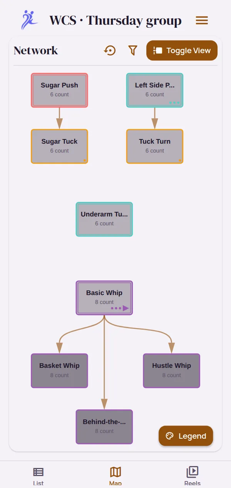
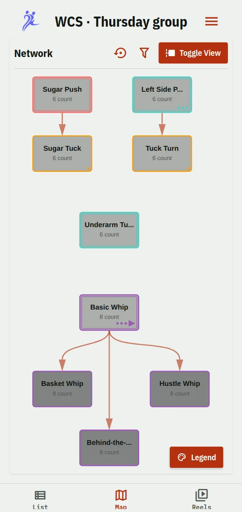

Keep what you learn in class.
DPM is a pattern library for partner dancers and the people who teach them. Collect the figures from your course with your own videos, see how they connect, and share the list with your classmates or your students.
In development for Android, with iOS to follow. Open source, no account needed.


Made for the dance course
A course teaches a new figure every week, and by the last week the first ones have faded. DPM gives what you learn a place to stay, on your own or together. Start with the way you dance or teach:
Keep track of your own progress
Every figure from your courses and festivals, with your videos and how they connect.
Read more → SharingOne list for your class
Classmates or friends follow one list that one of you keeps, and take turns filming.
Read more → TeachingYour course material, under your control
Decide who gets in, what your students may add and who can watch your videos.
Read more → StudentsYour teacher's list on your phone
What to expect from a course list, and how to subscribe with a code.
Read more →See how your figures connect
Some figures are foundations of the dance. In West Coast Swing, the sugar push, the left side pass, the underarm turn and the whip each stand on their own. Others grow out of them: the sugar tuck out of the sugar push, the tuck turn out of the left side pass, the basket whip out of the basic whip. You record which figure builds on which, and DPM draws the map.
-
Start a list for your dance
Pick a template for West Coast Swing, Salsa, Bachata, Brazilian Zouk, Argentine Tango or Lindy Hop, or start from a blank list for any other partner dance.
-
Add each figure as it comes
Name, type, counts and rhythm, level, notes, your videos from class, tags such as the course or festival, and the figures it builds on.
-
Look it up, map it, watch it
The list for looking things up, the map for how it all connects, and reels for watching your videos one after another.
And the details
One list per group or dance
Each list has its own pattern types, colours and modifiers. The six dance templates come with starter patterns.
Works offline
Everything is stored on your phone. Cloud sharing is optional and only happens when you publish.
No account
You never sign up or sign in. Sharing works with a code, not a profile.
Nine languages
English, 中文, हिन्दी, Español, Français, العربية, বাংলা, Português and Deutsch. DPM follows your phone's language by default.
Two styles, light and dark
After Hours is warm and roomy; Clipboard is dense enough to keep a whole course on one screen. Each in light and dark, with contrast that meets accessibility minimums. This site has both: switch at the top.
Questions
Which dances does it work for?
Any partner dance. There are templates for West Coast Swing, Salsa, Bachata, Brazilian Zouk, Argentine Tango and Lindy Hop, and a blank list lets you set up your own pattern types for anything else.
Do I need an account?
No. You never create an account or sign in. Your lists live on your phone. When you publish a list, suggest a pattern to one or ask to join one, the app quietly gets an anonymous ID, so that only you can change your list and a publisher can let a subscriber in, or mute one, without knowing who they are.
Where do my videos go?
Nowhere, unless you send them. Videos stay on your device. An export can include them if you choose, and a published list only shares video links, never the files.
Does the AI send my videos to a server?
No. Anonymizing, transcribing and suggesting all run on the phone. The models download once (Wi-Fi recommended), and you can delete them in Settings.
Is there an iPhone version?
Not yet. DPM comes to Android first, and iOS follows.